Sănătatea digitală și legislația sanitară: dosarul electronic de sănătate, telemedicina, inteligența artificială, spațiul european al datelor privind sănătatea, drepturile pacientului și răspunderea medicală
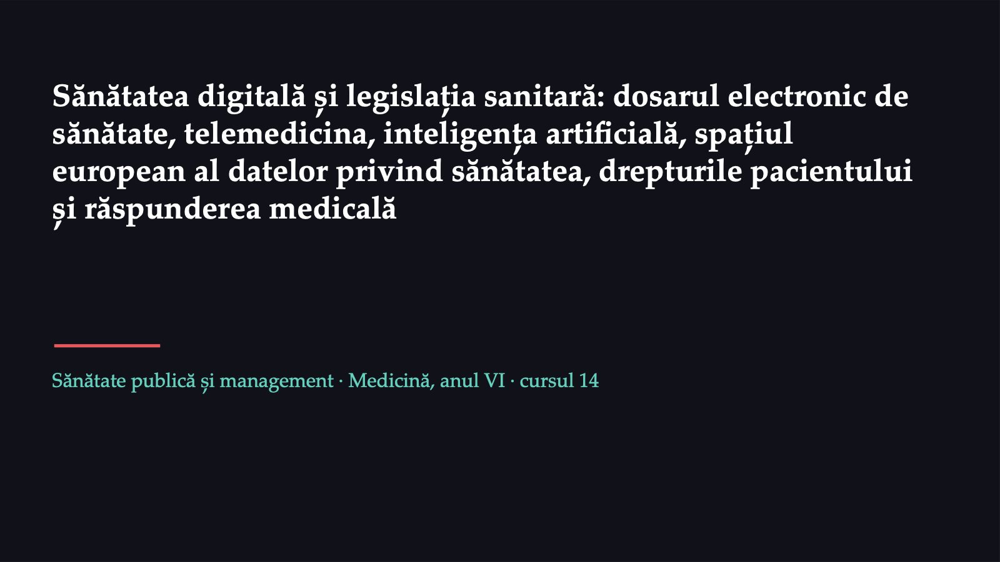
1 / 44Bună ziua. Acesta este ultimul curs al disciplinei. Are două jumătăți care par separate, sănătatea digitală și legislația sanitară, iar un caz real le leagă: dimineața în care sistemul informatic al spitalului nu pornește.
Tema din fișa disciplinei
![DESCHIDEREA Tema din fișa disciplinei La final: sinteza disciplinei „Prelegere interactivă; studii de caz etice: consimțământ, confidențialitate, malpraxis” (fișa disciplinei, cursul 14) Sănătatea digitală dosarul electronic de sănătate, telemedicina, sistemele informatice ale spitalelor și interoperabilitatea, prescripția și trimiterea electronică, inteligența artificială, spațiul european al datelor privind sănătatea Legislația sanitară legea-cadru a sănătății, drepturile pacientului, protecția și confidențialitatea datelor medicale, malpraxisul](diapozitive/C14/002.jpg) 2 / 44
2 / 44Fișa disciplinei dă acestui curs o metodă precisă: prelegere interactivă și studii de caz etice despre consimțământ, confidențialitate și malpraxis. Conținutul are două părți. Prima este sănătatea digitală: dosarul electronic de sănătate, telemedicina, sistemele informatice ale spitalelor și interoperabilitatea lor, prescripția și trimiterea electronică, inteligența artificială și spațiul european al datelor privind sănătatea. A doua este legislația sanitară: legea-cadru a sănătății, drepturile pacientului, protecția datelor medicale și malpraxisul. Cursul se încheie cu sinteza întregii discipline.
Azi sunteți medicii de la internări
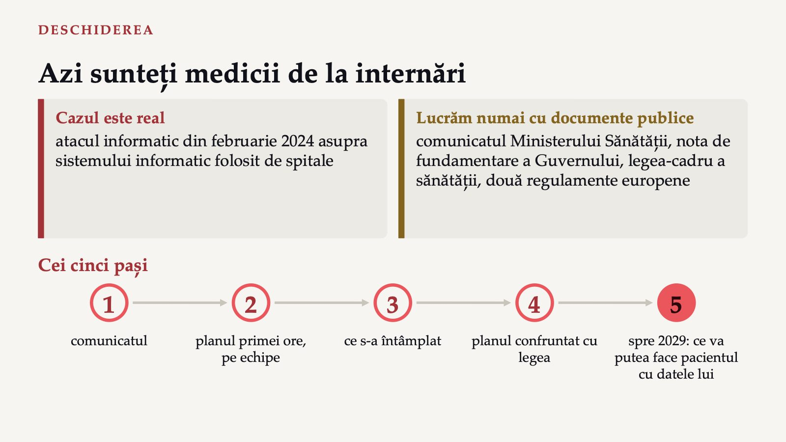
3 / 44Cazul de azi este real și îl cunoaștem numai din documente publice: comunicatul Ministerului Sănătății, nota de fundamentare a Guvernului care a urmat atacului, textul în vigoare al legii-cadru a sănătății și cele două regulamente europene care privesc datele de sănătate. Oamenii din curs sunt oamenii din aceste documente: personalul spitalelor în care sistemul a fost nefuncțional și pacienții acestor spitale. Lucrăm în cinci pași. Întâi citim comunicatul. Apoi, pe echipe, scrieți planul primei ore. Aflați ce s-a întâmplat după acea dimineață, vă confruntați planul cu legea și îl corectați. La sfârșit privim spre 2029, când pacientul va putea face lucruri noi cu datele lui.
Pasul 1: comunicatul Ministerului Sănătății, 12.02.2024
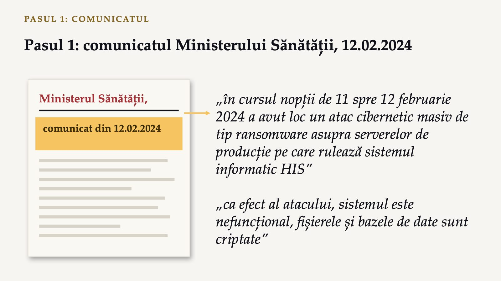
4 / 44Acesta este mesajul primit de spitale la începutul acelei zile. Ministerul Sănătății a anunțat că, în noaptea de 11 spre 12 februarie 2024, a avut loc un atac informatic masiv asupra serverelor pe care rula sistemul informatic folosit de spitale. Comunicatul spune ce s-a întâmplat cu sistemul: este nefuncțional, iar fișierele și bazele de date sunt criptate. Ați citit comunicatul înainte de curs și ați notat trei lucruri: ce nu mai funcționează, ce s-a cerut spitalelor să facă și ce nu spune comunicatul.
Ce s-a cerut spitalelor
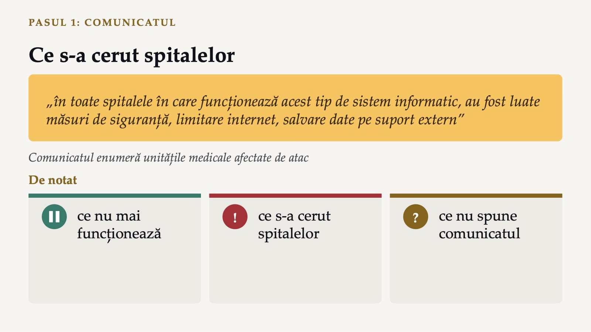
5 / 44Comunicatul enumeră unitățile medicale afectate și spune ce s-a făcut în toate spitalele care foloseau același tip de sistem: măsuri de siguranță, limitarea internetului, salvarea datelor pe un suport extern. Uitați-vă la ce ați notat: ce nu mai funcționează, ce s-a cerut spitalelor și ce lipsește din comunicat. Ce lipsește contează la fel de mult ca ce scrie.
Sunteți medicul de gardă la internări. Este dimineață, pacienții sosesc, sistemul informatic nu pornește. Ce v-ar lipsi cel mai mult în prima oră?
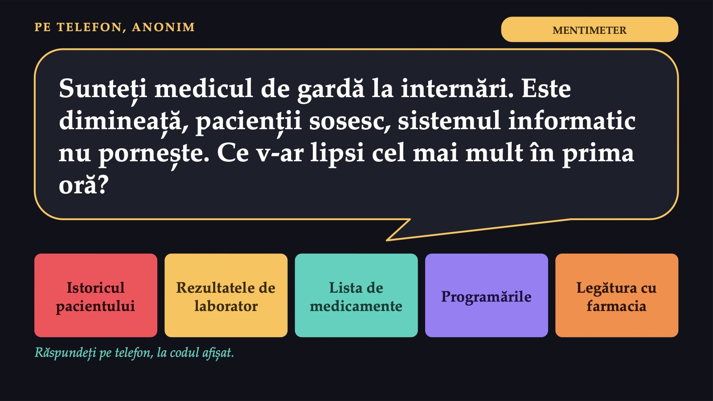
6 / 44Luați telefonul. Întrebarea este despre voi și nu are o variantă bună sau una rea: dacă ați fi medicul de gardă la internări în această dimineață, ce v-ar lipsi cel mai mult în prima oră fără sistem? Istoricul pacientului, rezultatele de laborator, lista de medicamente, programările sau legătura cu farmacia. Nimeni nu vede cine ce a ales.
Ce se oprește când se oprește sistemul informatic al spitalului
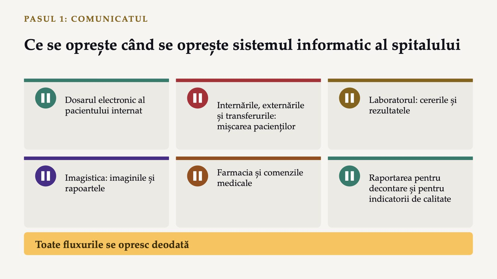
7 / 44Ce ați ales pe telefon este o parte a sistemului informatic al spitalului, ansamblul de programe prin care circulă informația unui spital. Are câteva componente standard: dosarul electronic al pacientului internat, modulul de internări, externări și transferuri, sistemul de laborator, sistemele de imagistică, modulele de farmacie și de comenzi medicale și modulele prin care spitalul își raportează activitatea pentru decontare și pentru indicatorii de calitate. Când sistemul se oprește, se opresc toate deodată: medicul de la internări nu mai vede istoricul, laboratorul nu mai primește cererile pe cale electronică, farmacia nu mai vede comenzile, iar spitalul nu mai poate raporta ce face.
Dosarul electronic de sănătate (DES) al pacientului
![PASUL 1: COMUNICATUL Dosarul electronic de sănătate (DES) al pacientului Legea nr. 95/2006, titlul IX¹: „înregistrări electronice consolidate la nivel național, cuprinzând date și informații medicale necesare pentru medici și pacienți” Date clinice, biologice, diagnostice și terapeutice, acumulate pe tot parcursul vieții; dosarul se constituie la transmiterea primului document medical De ce este folosit inegal completitudinea interoperabilitatea interfața accesul pacientului formarea Un dosar incomplet este puțin folosit un dosar puțin folosit rămâne incomplet](diapozitive/C14/008.jpg) 8 / 44
8 / 44În afara spitalului există dosarul electronic de sănătate al pacientului, reglementat de un titlu distinct al legii-cadru a sănătății, titlul IX¹ al Legii nr. 95/2006. Legea îl definește ca înregistrări electronice consolidate la nivel național, cu datele și informațiile medicale necesare medicilor și pacienților: date clinice, biologice, diagnostice și terapeutice, acumulate pe tot parcursul vieții. Dosarul se constituie odată cu transmiterea primului document medical al pacientului. Diferența dintre ce promite dosarul și ce găsește medicul în el are cinci cauze: nu toți furnizorii încarcă datele la fel de consecvent, sistemele nu schimbă datele între ele fără traduceri, interfața cere efort, accesul pacientului cere autentificare și competențe digitale, iar fără formare instrumentul nu este folosit la potențialul lui. Se formează un cerc vicios: un dosar incomplet este puțin folosit, iar un dosar puțin folosit rămâne incomplet.
Prescripția și trimiterea electronică
![PASUL 1: COMUNICATUL Prescripția și trimiterea electronică Legea cere personalului medical să aplice standardele terapeutice din ghidurile de practică ale specialității Sistemul de prescriere este un sprijin, nu un substitut: eroarea de alegere a medicamentului rămâne a medicului Circuitul în cinci pași evaluarea pacientului prescripția electronică, validată pe platforma asigurărilor de sănătate trimiterea electronică eliberarea medicamentului de către farmacist înregistrarea în dosarul electronic de sănătate](diapozitive/C14/009.jpg) 9 / 44
9 / 44În ambulatoriu, circuitul digital al pacientului are cinci pași: medicul evaluează pacientul, emite prescripția electronică, validată pe platforma asigurărilor de sănătate, emite dacă este nevoie trimiterea electronică, farmacistul preia prescripția și eliberează medicamentul, iar actele se înregistrează în dosarul electronic de sănătate. În dimineața cazului, medicul de la internări nu mai poate emite o prescripție electronică. Și în zilele obișnuite, sistemul de prescriere este un sprijin, nu un substitut: el nu poate verifica dacă medicamentul ales este potrivit pentru diagnostic. Legea cere personalului medical să aplice standardele terapeutice stabilite prin ghidurile de practică ale specialității, iar un sistem informatic nu mută această obligație de pe medic pe program.
Echipe de câte patru-cinci colegi
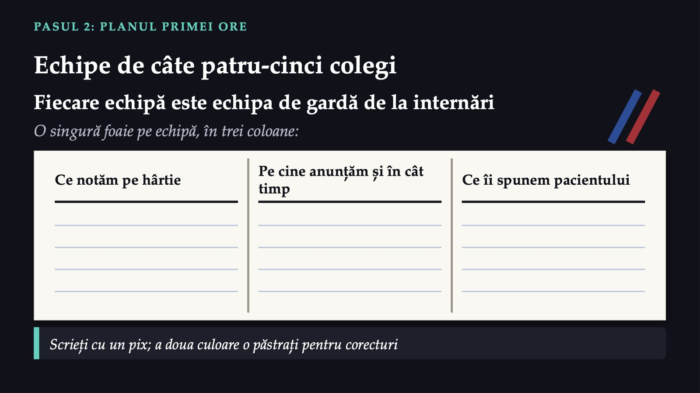
10 / 44Formați echipe de câte patru-cinci colegi, cu cei de lângă voi. Fiecare echipă este echipa de gardă de la internări și are o singură foaie, împărțită în trei coloane: ce notăm pe hârtie, pe cine anunțăm și în cât timp, ce îi spunem pacientului. Scrieți cu un pix; a doua culoare o veți folosi mai târziu, pentru corecturi.
Pasul 2: planul primei ore
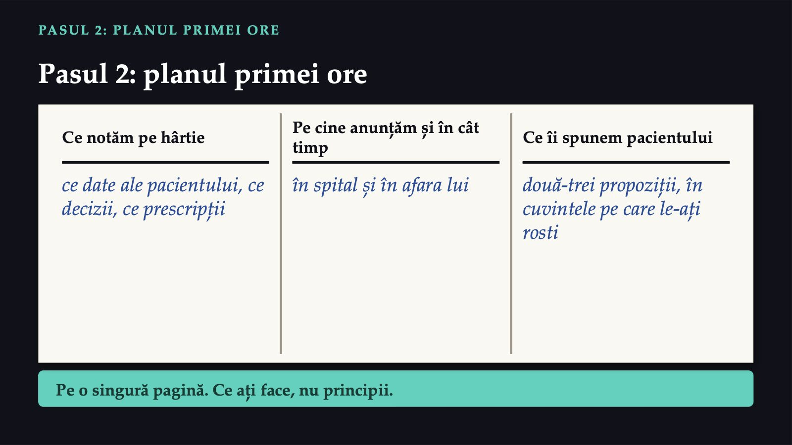
11 / 44Acum este rândul vostru. Sunteți echipa de gardă de la internări, este dimineață, pacienții sosesc, iar sistemul informatic nu pornește. Scrieți planul primei ore pe o singură pagină. În prima coloană, ce notați pe hârtie: ce date ale pacientului, ce decizii, ce prescripții. În a doua, pe cine anunțați și în cât timp, în spital și în afara lui. În a treia, ce îi spuneți pacientului, în două-trei propoziții, cu vorbele pe care le-ați rosti. Nu scrieți principii, ci ce ați face. Vă pot ajuta ce ați văzut până acum: ce se oprește odată cu sistemul și cum circulă o prescripție.
Pasul 3: ce s-a întâmplat
![PASUL 3: CE S-A ÎNTÂMPLAT Pasul 3: ce s-a întâmplat Nota vorbește despre campania de atacuri „din perioada 10-12.02.2024”; comunicatul, despre noaptea de 11 spre 12 februarie 2024 Nota de fundamentare a ordonanței de urgență prin care Guvernul a modificat legea-cadru a sănătății după atac: Un server pe care rula aplicația Hipocrate, „utilizată de 86 de unități spitalicești din România” „activitatea din 26 de spitale a fost afectată semnificativ, atât din perspectiva furnizării actului medical, cât și a securității cibernetice a datelor”](diapozitive/C14/012.jpg) 12 / 44
12 / 44Iată ce spun documentele publicate după acea dimineață. Nota de fundamentare a ordonanței de urgență prin care Guvernul a modificat legea-cadru a sănătății descrie atacul: un server pe care rula aplicația Hipocrate, utilizată de 86 de unități spitalicești din România. Activitatea din 26 de spitale a fost afectată semnificativ, atât în furnizarea actului medical, cât și în securitatea cibernetică a datelor. Nota numește câteva dintre spitalele afectate, din București și din județele Buzău și Constanța. Observați și o diferență între documente: nota vorbește despre perioada 10–12 februarie 2024, comunicatul despre noaptea de 11 spre 12 februarie. Le păstrăm pe amândouă, fiecare cu documentul ei.
Răspunsul statului: un alineat nou în legea-cadru
![PASUL 3: CE S-A ÎNTÂMPLAT Răspunsul statului: un alineat nou în legea-cadru Legea nr. 95/2006, art. 3 alin. (2), modificat prin Ordonanța de urgență a Guvernului nr. 66/2024 (Monitorul Oficial nr. 563 din 17.06.2024) Autoritățile competente după legea securității și apărării cibernetice (Legea nr. 58/2023, art. 10 alin. (1) lit. a) și d)) „derulează activități pentru cunoașterea, analizarea, prevenirea și contracararea incidentelor și atacurilor cibernetice la adresa infrastructurilor informatice și de comunicații de interes național din domeniul de reglementare al prezentei legi”](diapozitive/C14/013.jpg) 13 / 44
13 / 44Răspunsul statului a fost un alineat nou în primul articol al legii-cadru a sănătății. Forma în vigoare a art. 3 alin. (2) din Legea nr. 95/2006 trimite la autoritățile pe care legea securității și apărării cibernetice le numește competente și spune că ele desfășoară activități pentru cunoașterea, analizarea, prevenirea și contracararea incidentelor și atacurilor cibernetice asupra infrastructurilor informatice și de comunicații de interes național din domeniul sănătății. Articolul a fost modificat prin Ordonanța de urgență a Guvernului nr. 66/2024.
Ce spun documentele și ce nu spun
![PASUL 3: CE S-A ÎNTÂMPLAT Ce spun documentele și ce nu spun Pe marginea planului: ce nu ați prevăzut? Un sistem comun pentru multe spitale · o problemă de securitate a datelor, nu doar de îngrijire Spun sistemul atacat era folosit de multe spitale activitatea unei părți dintre ele a fost afectată, în îngrijirea pacienților și în securitatea datelor statul a schimbat legea-cadru Nu spun ? cât a durat întreruperea în fiecare spital ? cum au lucrat medicii în acele zile ? dacă vreun spital a notificat autoritatea de protecție a datelor](diapozitive/C14/014.jpg) 14 / 44
14 / 44Documentele publice spun, așadar, trei lucruri: sistemul atacat era folosit de multe spitale; activitatea unei părți dintre ele a fost afectată, atât în îngrijirea pacienților, cât și în securitatea datelor; statul a răspuns prin schimbarea legii-cadru. Ele nu spun cât a durat întreruperea în fiecare spital, cum au lucrat medicii în acele zile sau dacă vreun spital a notificat autoritatea de protecție a datelor. De aceea nu le afirmăm nici noi. Recitiți-vă planul și notați pe margine ce nu prevăzuserăți: că sistemul era comun pentru multe spitale și că problema privea și securitatea datelor, nu doar îngrijirea.
Legea nr. 95/2006 privind reforma în domeniul sănătății: legea-cadru
![HARTA LEGII Legea nr. 95/2006 privind reforma în domeniul sănătății: legea-cadru Titluri numerotate de la I la XXI, plus titluri intercalate (de exemplu IX¹, dosarul electronic de sănătate) Pentru medic I sănătatea publică III asistența medicală primară IV urgența și primul ajutor calificat VII spitalele VIII asigurările sociale de sănătate IX¹ dosarul electronic de sănătate XII profesia de medic și Colegiul Medicilor XVI răspunderea civilă a personalului medical XVIII medicamentul XIX asistența medicală transfrontalieră XX dispozitivele medicale Se citește întotdeauna în forma consolidată curentă, pe portalul legislativ al Ministerului Justiției](diapozitive/C14/015.jpg) 15 / 44
15 / 44Ca să vă corectați planul, aveți nevoie de harta legii. Legea nr. 95/2006 privind reforma în domeniul sănătății este legea-cadru a sistemului. Forma ei consolidată are titluri numerotate de la I la XXI, la care s-au adăugat titluri intercalate, precum titlul IX¹ despre dosarul electronic de sănătate. Pentru practica voastră contează mai ales titlurile despre sănătatea publică, asistența medicală primară, urgență, spitale, asigurările sociale de sănătate, dosarul electronic, exercitarea profesiei de medic, răspunderea civilă a personalului medical, medicament, asistența medicală transfrontalieră și dispozitivele medicale. Legea a fost modificată de foarte multe ori; citiți-o întotdeauna în forma consolidată curentă, pe portalul legislativ al Ministerului Justiției.
Drepturile pacientului: Legea nr. 46/2003
![HARTA LEGII Drepturile pacientului: Legea nr. 46/2003 Nerespectarea drepturilor atrage, după caz, răspunderea disciplinară, contravențională sau penală Îngrijiri de cea mai înaltă calitate, în conformitate cu resursele disponibile · respect, fără discriminare ? Informarea: starea de sănătate, intervențiile propuse, riscurile fiecărei proceduri, alternativele, inclusiv neefectuarea tratamentului ! A doua opinie medicală · la externare, un rezumat scris al investigațiilor, diagnosticului, tratamentului și îngrijirilor Consimțământul · confidențialitatea și viața privată · „dreptul de a fi uitat” (capitol introdus în 2022)](diapozitive/C14/016.jpg) 16 / 44
16 / 44A doua lege a hărții este Legea drepturilor pacientului nr. 46/2003, organizată pe capitole, câte unul pentru fiecare grup de drepturi. Pacientul are dreptul la îngrijiri de cea mai înaltă calitate, în conformitate cu resursele disponibile, și la respect, fără discriminare. Trebuie informat despre starea sa de sănătate, despre intervențiile propuse, despre riscurile fiecărei proceduri și despre alternative, inclusiv neefectuarea tratamentului. Are dreptul la o a doua opinie medicală și, la externare, la un rezumat scris. Capitolul despre consimțământ privește intervenția medicală, cel despre confidențialitate privește informațiile și viața privată. Un capitol introdus în 2022 reglementează dreptul de a fi uitat: supraviețuitorul unui cancer nu mai trebuie să declare boala la încheierea unor contracte de asigurare, în condițiile legii. Nerespectarea confidențialității și a celorlalte drepturi atrage, după caz, răspunderea disciplinară, contravențională sau penală. În a doua oră folosim aceste legi pe planul vostru.
?
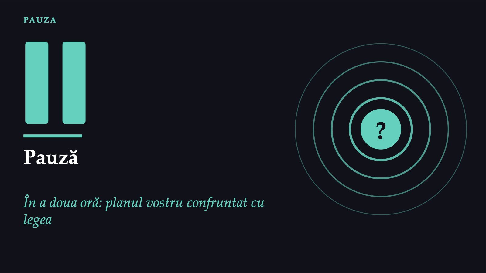
17 / 44Ne oprim aici. În a doua oră, fiecare echipă își confruntă planul cu legea și îl corectează. Păstrați foaia și a doua culoare.
Consimțământul informat: două legi, citite împreună
![PATRU IDEI PENTRU CORECTURĂ Consimțământul informat: două legi, citite împreună Medicul curant răspunde dacă nu obține consimțământul; excepția: urgența fără discernământ, când nu pot fi contactați nici reprezentantul legal, nici ruda cea mai apropiată ! Legea nr. 46/2003, capitolul despre consimțământul pacientului privind intervenția medicală ! Legea nr. 95/2006, titlul XVI, capitolul „Acordul pacientului informat” Acordul scris, pentru metodele de prevenție, diagnostic și tratament cu potențial de risc, după ce au fost explicate Informarea cuprinde: „diagnosticul, natura și scopul tratamentului, riscurile și consecințele tratamentului propus, alternativele viabile de tratament, riscurile și consecințele lor, prognosticul bolii fără aplicarea tratamentului”](diapozitive/C14/018.jpg) 18 / 44
18 / 44Prima idee este consimțământul. El se reglementează în două legi care se citesc împreună: Legea drepturilor pacientului și titlul XVI al legii-cadru, capitolul despre acordul pacientului informat. Legea-cadru cere acordul scris al pacientului pentru metodele de prevenție, diagnostic și tratament cu potențial de risc, după ce i-au fost explicate. Informarea se face la un nivel științific rezonabil pentru puterea lui de înțelegere și cuprinde diagnosticul, natura și scopul tratamentului, riscurile și consecințele lui, alternativele viabile și prognosticul bolii fără tratament. Medicul curant răspunde dacă nu obține consimțământul informat; excepția este urgența în care pacientul nu are discernământ, iar nici reprezentantul legal, nici ruda cea mai apropiată nu pot fi contactați.
Când este valid consimțământul
![PATRU IDEI PENTRU CORECTURĂ Când este valid consimțământul Patru condiții, împreună capacitatea de a decide informația completă și înțeleasă decizia voluntară consimțământul pentru actul concret Un proces documentat, nu un formular semnat; verificarea: pacientul spune, cu cuvintele lui, ce a înțeles Capacitatea se evaluează pentru fiecare decizie înțelege, reține, judecă, comunică o alegere; un diagnostic de demență nu înseamnă automat lipsa ei Fără capacitate decide reprezentantul legal, cu pacientul implicat cât îi permite înțelegerea; la refuzul reprezentantului, comisia de arbitraj de specialitate](diapozitive/C14/019.jpg) 19 / 44
19 / 44În etica medicală, un consimțământ este valid dacă îndeplinește patru condiții împreună: pacientul are capacitatea de a decide, a primit informația completă și a înțeles-o, decide voluntar, fără presiune, și consimte pentru actul concret. Dacă lipsește una, consimțământul este viciat. Consimțământul nu este un formular semnat, ci un proces documentat; un mod simplu de verificare este să-l rugați pe pacient să spună, cu cuvintele lui, ce a înțeles. Capacitatea se evaluează pentru fiecare decizie: pacientul înțelege informația, o reține, judecă pe baza ei și comunică o alegere. Un diagnostic de demență nu înseamnă automat lipsa capacității, iar familia nu ia locul pacientului care poate decide. Când pacientul nu are capacitate, decide reprezentantul legal; dacă acesta refuză o intervenție pe care medicii o consideră în interesul pacientului, decizia trece la o comisie de arbitraj de specialitate.
Confidențialitatea și secretul medical
![PATRU IDEI PENTRU CORECTURĂ Confidențialitatea și secretul medical „toate informațiile privind starea pacientului, rezultatele investigațiilor, diagnosticul, prognosticul, tratamentul, datele personale sunt confidențiale chiar și după decesul acestuia” (Legea nr. 46/2003) Se dau numai cu consimțământul explicit al pacientului sau dacă legea o cere în mod expres; fără consimțământ, numai altor furnizori acreditați, implicați în tratament Confidențialitatea protejează pacientul față de oricine, inclusiv față de familie Răspunderile se pot cumula disciplinară, contravențională sau penală civilă administrativă, după regulamentul european privind protecția datelor](diapozitive/C14/020.jpg) 20 / 44
20 / 44A doua idee este confidențialitatea. Legea drepturilor pacientului spune că toate informațiile despre starea pacientului, rezultatele investigațiilor, diagnosticul, prognosticul, tratamentul și datele personale sunt confidențiale, chiar și după decesul lui. Ele pot fi furnizate numai cu consimțământul explicit al pacientului sau dacă legea o cere în mod expres; consimțământul nu este necesar când le cer alți furnizori acreditați, implicați în tratamentul lui. Confidențialitatea îl protejează pe pacient față de oricine, inclusiv față de familie: soțul sau soția nu are un drept automat la informații. Încălcarea ei poate atrage, pentru același act, răspunderea disciplinară, contravențională sau penală, răspunderea civilă după legea-cadru și răspunderea administrativă după regulamentul european privind protecția datelor.
Încălcarea securității datelor cu caracter personal
![PATRU IDEI PENTRU CORECTURĂ Încălcarea securității datelor cu caracter personal Regulamentul (UE) 2016/679, regulamentul general privind protecția datelor, art. 4 pct. 12: „o încălcare a securității care duce, în mod accidental sau ilegal, la distrugerea, pierderea, modificarea, sau divulgarea neautorizată a datelor cu caracter personal transmise, stocate sau prelucrate într-un alt mod, sau la accesul neautorizat la acestea” Definiția nu cere ca datele să fi fost copiate: cuprinde și modificarea sau pierderea lor](diapozitive/C14/021.jpg) 21 / 44
21 / 44A treia idee este încălcarea securității datelor. Regulamentul general privind protecția datelor, Regulamentul (UE) 2016/679, o definește la art. 4 pct. 12: o încălcare a securității care duce, accidental sau ilegal, la distrugerea, pierderea, modificarea sau divulgarea neautorizată a datelor cu caracter personal ori la accesul neautorizat la ele. Citiți definiția cu atenție: ea nu cere ca datele să fi fost copiate de cineva; cuprinde și modificarea sau pierderea lor.
Cine notifică și în ce termen
![PATRU IDEI PENTRU CORECTURĂ Cine notifică și în ce termen Amenzile de până la 20 de milioane de euro sau 4% din cifra de afaceri (art. 83 alin. (5)) privesc principiile și drepturile, nu notificarea; pentru autoritățile publice, art. 83 alin. (7) Obligația este a operatorului, adică a spitalului, nu a medicului de gardă Art. 33 alin. (1): către autoritatea de supraveghere, „fără întârzieri nejustificate și, dacă este posibil, în termen de cel mult 72 de ore de la data la care a luat cunoștință de aceasta” Excepția: lipsa riscului pentru drepturile și libertățile persoanelor, dovedită de operator (considerentul 85; textul român al art. 33 o redă fără negație) Risc ridicat: operatorul îi informează și pe pacienți, fără întârzieri nejustificate (art. 34 alin. (1))](diapozitive/C14/022.jpg) 22 / 44
22 / 44Cine notifică și în ce termen? Obligația este a operatorului, adică a spitalului, nu a medicului de gardă. Operatorul notifică autoritatea de supraveghere fără întârzieri nejustificate și, dacă este posibil, în cel mult 72 de ore de la data la care a luat cunoștință de încălcare. Excepția este lipsa riscului pentru drepturile și libertățile persoanelor, iar dovada ei îi revine operatorului; așa o formulează considerentul 85 al regulamentului, pentru că textul român al art. 33 o redă fără negație. Dacă încălcarea poate genera un risc ridicat, operatorul îi informează și pe pacienți, fără întârzieri nejustificate. Amenzile de până la 20 de milioane de euro sau 4% din cifra de afaceri privesc principiile prelucrării și drepturile persoanei, nu notificarea. Pentru spitalele publice contează și art. 83 alin. (7): fiecare stat membru poate stabili dacă și în ce măsură se pot aplica amenzi autorităților și organismelor publice.
Malpraxisul: definiția legală și cele trei condiții
![PATRU IDEI PENTRU CORECTURĂ Malpraxisul: definiția legală și cele trei condiții Toate trei, împreună; fiecare persoană implicată răspunde „proporțional cu gradul de vinovăție” (art. 654 alin. (1)) 1. Fapta 2. Prejudiciul produs pacientului 3. Legătura de cauzalitate „eroarea profesională săvârșită în exercitarea actului medical sau medico-farmaceutic, generatoare de prejudicii asupra pacientului, implicând răspunderea civilă a personalului medical și a furnizorului de produse și servicii medicale, sanitare și farmaceutice” (Legea nr. 95/2006, art. 653 alin. (1) lit. b)) eroarea profesională, care cuprinde „neglijența, imprudența sau cunoștințe medicale insuficiente” (art. 653 alin. (2)); etalonul: ghidurile de practică aprobate la nivel național sau, în lipsa lor, standardele recunoscute de comunitatea medicală a specialității prejudiciul decurge din eroare](diapozitive/C14/023.jpg) 23 / 44
23 / 44A patra idee este răspunderea. Legea definește malpraxisul ca eroarea profesională săvârșită în exercitarea actului medical sau medico-farmaceutic, generatoare de prejudicii asupra pacientului, care implică răspunderea civilă a personalului medical și a furnizorului de servicii. Din definiție și din articolele care o urmează rezultă trei condiții, care trebuie îndeplinite împreună. Prima este fapta: eroarea profesională, care cuprinde neglijența, imprudența sau cunoștințele medicale insuficiente, judecată după ghidurile de practică aprobate la nivel național sau, în lipsa lor, după standardele recunoscute de comunitatea medicală a specialității. A doua este prejudiciul produs pacientului. A treia este legătura de cauzalitate: prejudiciul trebuie să decurgă din eroare. Dacă lipsește una, nu există malpraxis în sens juridic, chiar dacă pacientul este nemulțumit sau a avut loc un eveniment advers.
Pasul 4: corectați planul cu legea
![PASUL 4: PLANUL CONFRUNTAT CU LEGEA Pasul 4: corectați planul cu legea La final, două echipe își citesc corecturile: contează argumentele Cu a doua culoare, pe aceeași foaie, coloană cu coloană: Ce notăm pe hârtie ce date de sănătate notați și cum le păstrați confidențiale? Pe cine anunțăm și în cât timp ați anunțat persoanele din spital care pot porni notificarea autorității de protecție a datelor? Ați pus vreun termen care nu vă aparține? Ce îi spunem pacientului informarea este suficientă pentru consimțământul la actele din acea zi?](diapozitive/C14/024.jpg) 24 / 44
24 / 44Acum vă corectați planul, pe aceeași foaie, cu a doua culoare. Luați coloanele pe rând. La ce notați pe hârtie: ce date de sănătate notați și cum le păstrați confidențiale? La pe cine anunțați: ați anunțat persoanele din spital care pot porni notificarea autorității de protecție a datelor și ați pus vreun termen care nu vă aparține? La ce îi spuneți pacientului: este informarea suficientă pentru consimțământul la actele din acea zi? Pe ecran rămân, coloană cu coloană, textele de lege de care aveți nevoie. La sfârșit, două echipe își citesc corecturile și discutăm argumentele; nu există o singură variantă bună.
Pentru coloana „Ce notăm pe hârtie”: datele de sănătate și temeiul prelucrării
![PASUL 4: PLANUL CONFRUNTAT CU LEGEA Pentru coloana „Ce notăm pe hârtie”: datele de sănătate și temeiul prelucrării Datele privind sănătatea sunt o categorie specială: prelucrarea lor este interzisă ca regulă și permisă numai pe temeiurile din regulament Pentru îngrijire, temeiul este art. 9 alin. (2) lit. h): diagnosticul medical, asistența medicală, tratamentul, gestionarea sistemelor și serviciilor de sănătate Pentru a trata un pacient nu este nevoie de un „consimțământ pentru prelucrarea datelor”: consimțământul din Legea nr. 46/2003 privește actul medical Un formular de „acord privind protecția datelor” semnat la internare nu înlocuiește nici informarea pentru actul medical, nici informarea despre prelucrarea datelor](diapozitive/C14/025.jpg) 25 / 44
25 / 44Pentru prima coloană. Regulamentul general privind protecția datelor interzice, ca regulă, prelucrarea datelor privind sănătatea și o permite numai pe temeiurile enumerate de el. Pentru îngrijire, temeiul este cel de la art. 9 alin. (2) litera h): prelucrarea este necesară pentru stabilirea unui diagnostic medical, pentru furnizarea de asistență medicală sau a unui tratament și pentru gestionarea sistemelor și serviciilor de sănătate. De aici o distincție pe care mulți medici o încurcă: pentru a trata un pacient nu aveți nevoie de un consimțământ pentru prelucrarea datelor, pentru că temeiul este litera h). Consimțământul din Legea drepturilor pacientului privește actul medical. Un formular de acord privind protecția datelor, semnat la internare, nu înlocuiește nici informarea pentru actul medical, nici informarea despre prelucrarea datelor.
Drepturile pacientului asupra datelor și regulile de lucru ale clinicianului
![PASUL 4: PLANUL CONFRUNTAT CU LEGEA Drepturile pacientului asupra datelor și regulile de lucru ale clinicianului Dreptul de acces (art. 15) de rectificare (art. 16) de ștergere (art. 17), limitat în sănătate de termenele legale de păstrare la portabilitate (art. 20) la opoziție (art. 21) Regulile de lucru ale acestui curs (nu sunt texte de lege) numai datele pacienților pe care îi îngrijiți contul personal, nu unul comun fără copii pe dispozitive personale nesecurizate orice incident de securitate, anunțat imediat pe calea internă a spitalului sprijin pentru copia cerută de pacient](diapozitive/C14/026.jpg) 26 / 44
26 / 44Pacientul are, față de spital, drepturile oricărei persoane ale cărei date se prelucrează: dreptul de acces, de exemplu la o copie a dosarului, de rectificare, de ștergere, limitat în sănătate de termenele legale de păstrare a documentelor medicale, la portabilitate și la opoziție. Cursul vă propune cinci reguli de lucru, care nu sunt texte de lege: accesați numai datele pacienților pe care îi îngrijiți; folosiți contul personal, nu unul comun; nu copiați date pe dispozitive personale nesecurizate; anunțați imediat, pe calea internă a spitalului, orice incident de securitate pe care îl observați; la cererea pacientului, sprijiniți obținerea copiei datelor lui.
Pentru coloana „Ce îi spunem pacientului”: refuzul, urgența, minorii
![PASUL 4: PLANUL CONFRUNTAT CU LEGEA Pentru coloana „Ce îi spunem pacientului”: refuzul, urgența, minorii Actul medical la distanță cere același consimțământ ca actul față în față Pacientul poate refuza sau opri o intervenție, asumându-și în scris răspunderea; consecințele refuzului i se explică Urgența când pacientul nu își poate exprima voința, acordul se poate deduce dintr-o exprimare anterioară a voinței lui Fără reprezentant legal și fără rudă de contactat autorizarea autorității tutelare sau, dacă întârzierea ar pune ireversibil în pericol sănătatea și viața, intervenția fără ea Vârsta consimțământului 18 ani; minorul consimte singur în urgență, cu discernământ, când părinții nu pot fi contactați, și, la peste 16 ani, pentru problemele sexuale și reproductive](diapozitive/C14/027.jpg) 27 / 44
27 / 44Pentru a treia coloană, câteva situații speciale. Pacientul are dreptul să refuze sau să oprească o intervenție, asumându-și în scris răspunderea, iar consecințele refuzului trebuie să-i fie explicate. În urgență, când pacientul nu își poate exprima voința, personalul medical poate deduce acordul dintr-o exprimare anterioară a voinței lui. Dacă nu poate contacta nici reprezentantul legal, nici ruda cea mai apropiată, medicul poate cere autorizarea autorității tutelare sau poate acționa fără ea, dacă timpul până la exprimarea acordului ar pune în pericol, ireversibil, sănătatea și viața pacientului. Vârsta legală pentru consimțământul informat este de 18 ani; minorul poate consimți singur în urgență, când părinții nu pot fi contactați și el are discernământul necesar, iar la peste 16 ani pentru diagnosticul și tratamentul problemelor sexuale și reproductive. Pentru actul medical la distanță, consimțământul se cere la fel ca pentru cel față în față.
Pentru ce răspunde și pentru ce nu răspunde personalul medical
![PASUL 4: PLANUL CONFRUNTAT CU LEGEA Pentru ce răspunde și pentru ce nu răspunde personalul medical Apărarea medicului este documentația: ce a făcut și de ce Răspunderea civilă nu o înlătură pe cea penală, dacă fapta este infracțiune Răspunde eroarea (neglijența, imprudența, cunoștințele medicale insuficiente) în prevenție, diagnostic și tratament nerespectarea confidențialității, a consimțământului informat și a obligației de a acorda asistență medicală depășirea competenței, cu excepția urgențelor fără personal cu competența necesară Nu răspunde pentru prejudiciile datorate condițiilor de lucru dotării insuficiente infecțiilor nosocomiale „efectelor adverse, complicațiilor și riscurilor în general acceptate ale metodelor de investigație și tratament” viciilor ascunse ale materialelor](diapozitive/C14/028.jpg) 28 / 44
28 / 44Legea spune pentru ce răspunde personalul medical: pentru prejudiciile produse din eroare, prin neglijență, imprudență sau cunoștințe medicale insuficiente; pentru nerespectarea regulilor privind confidențialitatea, consimțământul informat și obligativitatea acordării asistenței medicale; pentru depășirea competenței, cu excepția urgențelor în care nu este disponibil personal cu competența necesară. Răspunderea civilă nu înlătură răspunderea penală, dacă fapta este infracțiune. Legea spune și pentru ce nu răspunde: pentru prejudiciile datorate condițiilor de lucru, dotării insuficiente, infecțiilor nosocomiale, efectelor adverse, complicațiilor și riscurilor în general acceptate ale metodelor de investigație și tratament, precum și viciilor ascunse ale materialelor. Aceasta este baza juridică a riscului inerent. Un medic care a prescris un antibiotic conform ghidului, după o anamneză corectă fără alergie cunoscută, nu a săvârșit o eroare profesională dacă pacientul face o reacție anafilactică. Evaluarea s-ar schimba dacă anamneza pentru alergii nu a fost făcută sau notată. De aceea, apărarea medicului este documentația completă: nu a evita pacienții, ci a nota ce a făcut și de ce.
Spitalul răspunde separat
![PASUL 4: PLANUL CONFRUNTAT CU LEGEA Spitalul răspunde separat Unitățile sanitare răspund civil pentru infecțiile nosocomiale (dacă nu se dovedește o cauză externă pe care nu o puteau controla) defectele cunoscute ale aparaturii folosite fără reparație materialele folosite după expirare echipamentele sau serviciile acceptate de la furnizori fără asigurarea cerută de lege În solidar cu personalul, pentru prejudiciile produse de personalul medical angajat sau care lucrează pe baza unui contract de prestări de servicii medicale (alineat modificat prin Ordonanța de urgență a Guvernului nr. 84/2025) Pentru nerespectarea propriilor reglementări interne Răspunderea se extinde la producătorii de echipamente, dispozitive, medicamente și materiale sanitare, la furnizorii de servicii subcontractați și la furnizorii de utilități](diapozitive/C14/029.jpg) 29 / 44
29 / 44Spitalul răspunde separat. Unitățile sanitare publice sau private răspund civil pentru prejudiciile produse de infecțiile nosocomiale, dacă nu se dovedește o cauză externă pe care nu o puteau controla, de defectele cunoscute ale aparaturii folosite fără reparație, de materialele folosite după expirare și de echipamentele sau serviciile acceptate de la furnizori fără asigurarea cerută de lege. Ele răspund în solidar cu personalul pentru prejudiciile produse de personalul medical angajat sau care lucrează în unitate pe baza unui contract de prestări de servicii medicale; alineatul a fost modificat prin Ordonanța de urgență a Guvernului nr. 84/2025. Unitățile răspund și pentru nerespectarea propriilor reglementări interne, iar legea extinde răspunderea la producătorii de echipamente, dispozitive, medicamente și materiale sanitare, la furnizorii de servicii subcontractați de spital și la furnizorii de utilități.
Planul confruntat cu legea: ce spun notele cursului
![PASUL 4: PLANUL CONFRUNTAT CU LEGEA Planul confruntat cu legea: ce spun notele cursului ! Criptarea fișierelor de către atacatori se încadrează în definiția încălcării securității datelor, după textul ei, chiar fără dovada copierii Ce notăm pe hârtie notele din prima oră conțin date de sănătate; se păstrează ca orice document medical, nu pe biroul de la internări, și se introduc în sistem când acesta revine Pe cine anunțăm medicul de la internări nu notifică autoritatea, dar știe pe cine anunță în spital (șeful de secție, conducerea, responsabilul cu protecția datelor, serviciul informatic), pentru că termenul operatorului începe de când spitalul află Ce îi spunem pacientului pe scurt și fără alarmă, că datele lui nu sunt disponibile în sistem și ce înseamnă asta pentru îngrijirea din acea zi](diapozitive/C14/030.jpg) 30 / 44
30 / 44Iată ce spun notele cursului despre fiecare coloană; comparați-le cu corecturile voastre. Notele de pe hârtie din prima oră conțin date de sănătate: ele trebuie păstrate ca orice document medical, nu lăsate pe biroul de la internări, și introduse în sistem când acesta revine. Medicul de la internări nu notifică autoritatea de protecție a datelor, dar trebuie să știe pe cine anunță în spital: șeful de secție, conducerea, responsabilul cu protecția datelor, serviciul informatic, pentru că termenul operatorului începe de când spitalul află. Regulamentul nu fixează un termen pentru raportarea internă, ci unul pentru notificarea autorității de către operator. Criptarea fișierelor de către atacatori, care face datele inutilizabile pentru spital, se încadrează în definiția încălcării securității datelor, după textul ei, chiar dacă nu se dovedește că datele au fost copiate. Iar pacientul trebuie să afle, pe scurt și fără alarmă, că datele lui nu sunt disponibile în sistem și ce înseamnă asta pentru îngrijirea din acea zi; consimțământul se dă pe hârtie, ca întotdeauna.
Întrebarea care rămâne deschisă
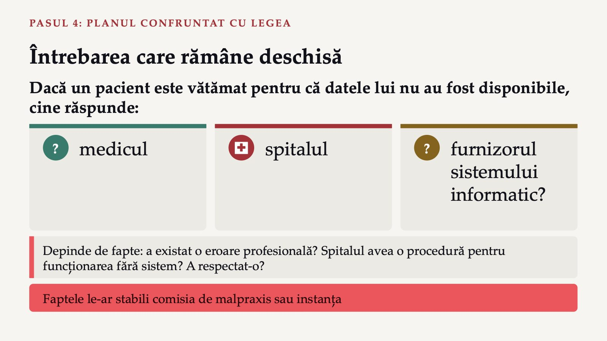
31 / 44Rămâne o întrebare la care nicio sursă a cursului nu dă o soluție: dacă un pacient este vătămat pentru că datele lui nu au fost disponibile, cine răspunde, medicul, spitalul sau furnizorul sistemului informatic? Totul ar depinde de fapte: a existat o eroare profesională, avea spitalul o procedură pentru funcționarea fără sistem și a respectat-o? Le-ar stabili comisia de malpraxis sau instanța. Argumentele voastre, pe mai multe părți, sunt cele pe care le-ar cântări ele.
5
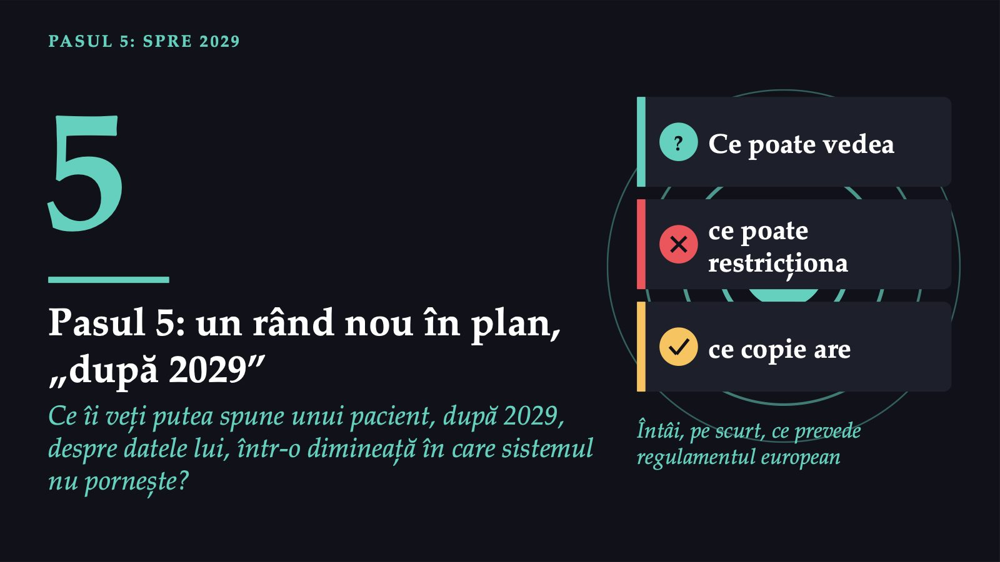
32 / 44Ultimul pas privește viitorul apropiat. Fiecare echipă adaugă la plan un rând: ce îi veți putea spune unui pacient, după 2029, despre datele lui, într-o dimineață în care sistemul nu pornește: ce poate vedea, ce poate restricționa, ce copie are. Ca să-l scrieți, aveți nevoie de ce prevede regulamentul european privind spațiul european al datelor privind sănătatea.
Spațiul european al datelor privind sănătatea: Regulamentul (UE) 2025/327
![PASUL 5: SPRE 2029 Spațiul european al datelor privind sănătatea: Regulamentul (UE) 2025/327 Adoptat de Parlamentul European și de Consiliu la 11 februarie 2025; aplică, cu reguli speciale, regulamentul general privind protecția datelor, nu îl înlocuiește Utilizarea primară îngrijirea persoanei, inclusiv prescrierea și eliberarea medicamentelor și a dispozitivelor medicale Utilizarea secundară alte scopuri decât cele ale colectării (cercetarea, inovarea, politicile publice, statistica), prin organisme de acces la datele privind sănătatea, cu date pseudonimizate sau anonimizate Categoriile prioritare rezumatul pacientului prescripțiile electronice eliberarea medicamentelor imagistica rezultatele testelor rapoartele de externare schimbul transfrontalier prin MyHealth@EU](diapozitive/C14/033.jpg) 33 / 44
33 / 44Regulamentul (UE) 2025/327, adoptat la 11 februarie 2025, creează spațiul european al datelor privind sănătatea. El nu înlocuiește regulamentul general privind protecția datelor, ci îl aplică, cu reguli speciale, datelor de sănătate. Regulamentul deosebește două utilizări ale datelor. Utilizarea primară este prelucrarea lor pentru îngrijirea persoanei, inclusiv prescrierea și eliberarea medicamentelor și a dispozitivelor medicale. Utilizarea secundară este prelucrarea lor în alte scopuri decât cele pentru care au fost colectate, precum cercetarea, inovarea, politicile publice și statistica: organismele de acces la datele privind sănătatea evaluează cererile și eliberează autorizații, iar datele se pun la dispoziție pseudonimizate sau anonimizate. Pentru îngrijire, regulamentul fixează categorii prioritare de date, care trebuie să circule în același format în toată Uniunea, prin infrastructura comună MyHealth@EU.
Ce va putea face pacientul și de când
![PASUL 5: SPRE 2029 Ce va putea face pacientul și de când Pentru medic: pacientul vede aproape în același timp ce s-a scris despre el; dosarul poate avea părți ascunse, deci medicul întreabă, nu doar citește Regulamentul se aplică de la 26 martie 2027 drepturile pacientului (art. 3–15), eșalonat: De la 26 martie 2029 fișele pacienților, prescripțiile electronice, eliberarea medicamentelor de la 26 martie 2031 imagistica, rezultatele testelor, rapoartele de externare Acces gratuit, imediat după înregistrare, într-un format ușor de citit · copie electronică gratuită Restricționarea accesului profesioniștilor la toate datele sau la o parte din ele, cu informarea că restricția poate influența îngrijirea · statele pot prevedea și un drept de refuz, reversibil](diapozitive/C14/034.jpg) 34 / 44
34 / 44Regulamentul se aplică de la 26 martie 2027, dar drepturile pacientului vin eșalonat: de la 26 martie 2029 pentru fișele pacienților, prescripțiile electronice și informațiile despre eliberarea medicamentelor, de la 26 martie 2031 pentru imagistică, rezultatele testelor și rapoartele de externare. Din 2029, pacientul va putea accesa gratuit, imediat după înregistrare, datele lui din aceste categorii, într-un format ușor de citit, și va putea descărca gratuit o copie electronică. Va putea restricționa accesul profesioniștilor la toate datele lui sau la o parte din ele, iar atunci i se va spune că restricția poate influența îngrijirea. Statele pot prevedea și un drept de refuz, care trebuie să fie reversibil. Pentru voi, asta schimbă două lucruri: pacientul va vedea ce ați scris despre el aproape în același timp cu voi, deci textul trebuie să fie corect și înțeles, iar uneori veți lucra cu un dosar din care pacientul a ascuns o parte, deci va trebui să întrebați, nu doar să citiți.
Ca pacienți: ați restricționa accesul medicilor la o parte din datele voastre? La care?
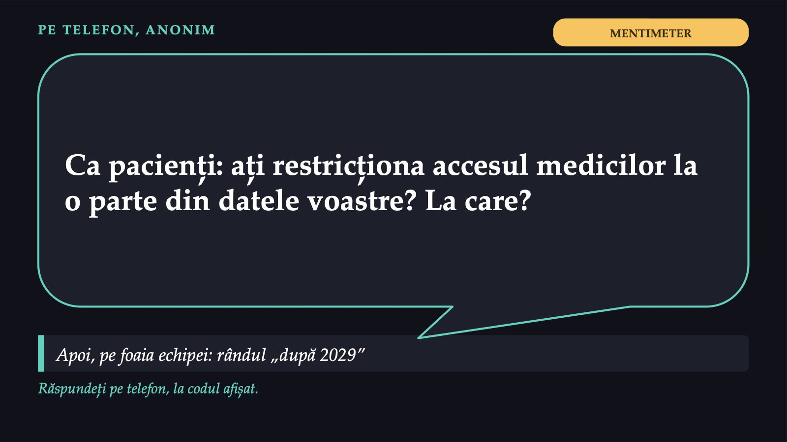
35 / 44Luați din nou telefonul. Întrebarea este despre voi, ca pacienți, și nu are o variantă bună sau una rea: ați restricționa accesul medicilor la o parte din datele voastre, și la care? Apoi scrieți, pe echipe, rândul „după 2029” din plan: ce îi veți putea spune pacientului despre ce poate vedea, ce poate restricționa și ce copie are.
Kahoot
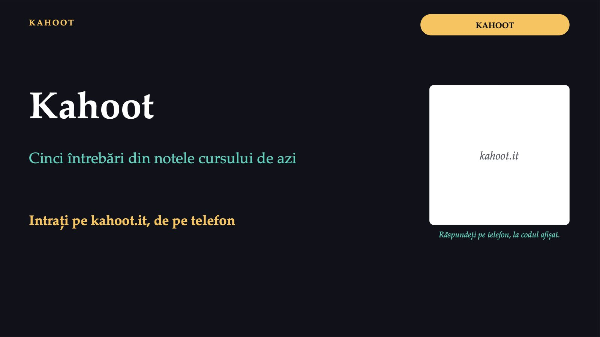
36 / 44Înainte de încheiere, un joc de cinci întrebări din notele cursului de azi, pe telefon.
Sinteza disciplinei
![RECAPITULAREA Sinteza disciplinei Sănătatea publică: cum se măsoară sănătatea unei populații și ce o determină · Managementul: cum se organizează și se conduc serviciile care o îngrijesc Cazul le adună: o problemă clinică · o problemă de organizare · o problemă juridică · o problemă de politică publică Medicul la intersecție: cine deschide un dosar electronic răspunde de confidențialitatea lui · cine consultă la distanță are aceleași obligații de informare și consimțământ · cine folosește un algoritm rămâne răspunzător pentru decizie](diapozitive/C14/037.jpg) 37 / 44
37 / 44Cursul acesta închide disciplina și îi leagă cele două jumătăți. De-a lungul semestrului, sănătatea publică a arătat cum se măsoară sănătatea unei populații și ce o determină, iar managementul a arătat cum se organizează și se conduc serviciile care o îngrijesc. Cazul de azi le adună: un atac asupra unui sistem informatic a devenit o problemă clinică, pentru că furnizarea actului medical a fost afectată, o problemă de organizare, prin procedurile spitalului pentru funcționarea fără sistem, o problemă juridică, prin confidențialitate, protecția datelor și răspundere, și, după câteva luni, o problemă de politică publică, prin schimbarea legii-cadru. Medicul se află la intersecția lor: cine deschide un dosar electronic răspunde de confidențialitatea lui, cine consultă la distanță are aceleași obligații de informare și de consimțământ ca în cabinet, cine folosește un algoritm rămâne răspunzător pentru decizie.
Ce reținem
![RECAPITULAREA Ce reținem Sănătatea digitală are patru componente; un spital care depinde de un sistem informatic are nevoie și de un plan pentru zilele în care sistemul nu funcționează Dosarul electronic de sănătate are un titlu propriu în legea-cadru; telemedicina este un act medical, cu aceleași obligații ca actul față în față Spațiul european al datelor privind sănătatea: utilizarea primară și cea secundară; pacientul își va vedea, descărca și restricționa datele, eșalonat Consimțământul este un proces documentat; temeiul prelucrării datelor pentru îngrijire este altul decât consimțământul; confidențialitatea protejează pacientul și față de familie Malpraxisul cere eroare profesională, prejudiciu și legătură de cauzalitate; riscurile în general acceptate nu sunt malpraxis; apărarea medicului este documentația](diapozitive/C14/038.jpg) 38 / 44
38 / 44Ce reținem. Sănătatea digitală are patru componente, iar un spital care depinde de un sistem informatic are nevoie și de un plan pentru zilele în care sistemul nu funcționează. Dosarul electronic de sănătate are un titlu propriu în legea-cadru, iar telemedicina este un act medical cu aceleași obligații de informare, consimțământ, confidențialitate și răspundere ca actul față în față. Spațiul european al datelor privind sănătatea deosebește îngrijirea de cercetare și politici și îi dă pacientului, eșalonat, dreptul de a-și vedea, descărca și restricționa datele. Consimțământul pentru actul medical este un proces documentat, temeiul prelucrării datelor pentru îngrijire este altul decât consimțământul, iar confidențialitatea protejează pacientul și față de familie. Malpraxisul cere eroare profesională, prejudiciu și legătură de cauzalitate; riscurile în general acceptate ale tratamentului nu sunt malpraxis, iar apărarea medicului este documentația.
Ce faceți diferit luni dimineață
 39 / 44
39 / 44În prima săptămână la un nou loc de muncă, întrebați unde este procedura spitalului pentru funcționarea fără sistem informatic și citiți-o. Aflați cine este responsabilul cu protecția datelor și pe ce cale se anunță un incident. Verificați-vă polița de malpraxis înainte de a semna contractul. Și, la fiecare pacient, notați ce ați făcut și de ce: documentația vă apără și în zilele în care sistemul nu pornește. Câteva teme ale cursului nu au intrat azi în lucrul pe plan: telemedicina, inteligența artificială, interoperabilitatea, procedura de stabilire a malpraxisului, asigurarea obligatorie și asistența medicală transfrontalieră. Ele sunt în note, iar examenul se dă pe note; ultimele diapozitive le rezumă.
Din note: sănătatea digitală și interoperabilitatea
![DIN NOTE, DE CITIT Din note: sănătatea digitală și interoperabilitatea Patru componente: dosarul electronic al pacientului · telemedicina · sănătatea mobilă · inteligența artificială clinică Fiecare promisiune are o condiție: dosarul electronic poate reduce erorile de transcriere, dar poate aduce erori noi; un flux de lucru deficitar, odată digitalizat, devine doar un flux deficitar mai rapid Interoperabilitatea: tehnică (sistemele se conectează) · semantică (aceleași clasificări și terminologii: Clasificarea internațională a maladiilor, SNOMED CT, LOINC) · organizațională (procedurile permit schimbul real) Standarde de schimb: familia HL7, cu standardul FHIR · DICOM, pentru imagistică](diapozitive/C14/040.jpg) 40 / 44
40 / 44Sănătatea digitală înseamnă folosirea tehnologiei informației și a comunicațiilor pentru îngrijirea pacienților, pentru organizarea serviciilor și pentru sănătatea populației, cu patru componente: dosarul electronic al pacientului, telemedicina, sănătatea mobilă și inteligența artificială clinică. Fiecare are propriul cadru juridic. Fiecare promisiune a digitalizării are o condiție: dosarul electronic poate reduce erorile de transcriere, dar poate aduce erori noi, iar un flux de lucru deficitar, odată digitalizat, devine doar un flux deficitar mai rapid. Interoperabilitatea, capacitatea sistemelor de a lucra împreună și de a schimba informații fără să le modifice conținutul, are trei niveluri: tehnic, semantic și organizațional.
Din note: telemedicina
![DIN NOTE, DE CITIT Din note: telemedicina Șapte servicii teleconsultația teleexpertiza teleasistența teleradiologia telepatologia telemonitorizarea telereabilitarea (lista completată prin Legea nr. 138/2026) Cerințele actului la distanță identitatea și calitatea medicului informarea pacientului consimțământul liber și informat secretul medical confidențialitatea datelor documentele în dosarul electronic de sănătate continuitatea îngrijirii Serviciile medicale furnizate la distanță, fără prezența fizică simultană a personalului medical și a pacientului, în mod securizat (Legea nr. 95/2006; introduse prin Ordonanța de urgență a Guvernului nr. 196/2020) Furnizată diferențiat, după specialitate și tipul de serviciu; decizia de a consulta la distanță este clinică
Răspunderea medicului nu scade odată cu distanța](diapozitive/C14/041.jpg) 41 / 44
41 / 44Legea-cadru definește telemedicina ca totalitatea serviciilor medicale furnizate la distanță, fără prezența fizică simultană a personalului medical și a pacientului, în mod securizat. Prevederile au fost introduse prin Ordonanța de urgență a Guvernului nr. 196/2020, iar forma în vigoare enumeră șapte servicii. Diferența cea mai importantă pentru practică este între teleconsultație, în care medicul vorbește cu pacientul, și teleexpertiză, în care medicii își cer părerea între ei. Actul medical la distanță respectă drepturile pacientului și o listă de cerințe, iar legea cere ca telemedicina să fie furnizată diferențiat, după specialitate și tipul de serviciu. Răspunderea medicului nu scade odată cu distanța.
Din note: inteligența artificială în clinică
![DIN NOTE, DE CITIT Din note: inteligența artificială în clinică Patru clase de aplicații diagnosticul pe imagini predicția clinică triajul și alocarea resurselor genomica Patru riscuri eroarea sistematică (distorsiunea) din datele de antrenament cutia neagră eroarea la scară îmbătrânirea modelului Performanța tehnică dintr-un studiu de validare nu este același lucru cu efectul clinic Medicul știe trei lucruri: pe ce populație a fost antrenat instrumentul, ce studii de validare există pe o populație ca a lui, ce face când nu este de acord; decizia rămâne a lui Regulamentul (UE) 2024/1689 privind inteligența artificială: adoptat la 13 iunie 2024, publicat la 12.07.2024; conținutul lui nu a fost confruntat pentru note](diapozitive/C14/042.jpg) 42 / 44
42 / 44Aplicațiile inteligenței artificiale cu cele mai multe dovezi se grupează în patru clase: diagnosticul pe imagini, predicția clinică, triajul și alocarea resurselor, genomica. Întrebarea care contează este ce schimbă pentru pacient: un algoritm foarte bun într-un studiu retrospectiv poate să nu îmbunătățească îngrijirea pe alți pacienți. Riscurile au patru forme: eroarea sistematică venită din datele de antrenament, cutia neagră, eroarea la scară și îmbătrânirea modelului. Medicul nu folosește un asemenea instrument fără să știe pe ce populație a fost antrenat, ce studii de validare există pe o populație ca a lui și ce face când nu este de acord cu el; decizia rămâne a lui. Uniunea Europeană are un regulament propriu pentru inteligența artificială, Regulamentul (UE) 2024/1689; textul lui nu a putut fi confruntat pentru note, de aceea ele nu spun cum clasifică sistemele după risc.
Din note: procedura de stabilire a malpraxisului și asigurarea
![DIN NOTE, DE CITIT Din note: procedura de stabilire a malpraxisului și asigurarea Comisia de monitorizare și competență profesională pentru cazurile de malpraxis, la fiecare direcție de sănătate publică (regulamentul: Ordinul ministrului sănătății publice nr. 1343/2006); o sesizează persoana care se consideră victimă sau reprezentantul ei legal Experți trași la sorți, cu grad cel puțin egal cu al persoanei reclamate 1 raport în 30 de zile 2 decizia comisiei în cel mult 3 luni de la sesizare 3 contestația, în 15 zile de la comunicare, la tribunal Procedura este confidențială până la sesizarea instanței; prescripția: 3 ani de la producerea prejudiciului, cu excepția infracțiunilor Asigurarea de malpraxis: copia ei se prezintă înainte de contractul de muncă; lipsa ei este abatere disciplinară; acoperă răspunderea civilă, nu pe cea penală sau disciplinară](diapozitive/C14/043.jpg) 43 / 44
43 / 44La fiecare direcție de sănătate publică funcționează o comisie pentru cazurile de malpraxis, din care face parte și un expert medico-legal. Comisia alege prin tragere la sorți experți cu un grad cel puțin egal cu al persoanei reclamate; ei predau un raport în 30 de zile, iar comisia decide în cel mult 3 luni de la sesizare. Decizia se poate contesta în 15 zile, la tribunal. Actele de malpraxis se prescriu în 3 ani de la producerea prejudiciului. Asigurarea de malpraxis este o condiție obligatorie pentru angajare; ea acoperă răspunderea civilă, iar răspunderea penală și cea disciplinară rămân personale. contestația, în 15 zile de la comunicare, la tribunal
Din note: asistența medicală transfrontalieră
![DIN NOTE, DE CITIT Din note: asistența medicală transfrontalieră ! Rambursarea și autorizarea prealabilă nu au fost confruntate cu articolele titlului XIX: notele nu le afirmă Legea nr. 95/2006, titlul XIX accesul la asistență medicală transfrontalieră sigură și de înaltă calitate și cooperarea dintre România și celelalte state membre Asistența furnizată sau prescrisă în alt stat membru decât statul de afiliere telemedicina se consideră furnizată în statul în care este stabilit furnizorul Trimiteri la Regulamentul (CE) nr. 883/2004 și la Regulamentul (CE) nr. 987/2009; spațiul european al datelor privind sănătatea modifică Directiva 2011/24/UE și adaugă partea digitală](diapozitive/C14/044.jpg) 44 / 44
44 / 44Un pacient poate primi îngrijiri în alt stat membru al Uniunii, iar legea-cadru reglementează situația în titlul XIX. Asistența medicală transfrontalieră este cea furnizată sau prescrisă în alt stat membru decât statul de afiliere; în cazul telemedicinei, ea se consideră furnizată în statul în care este stabilit furnizorul. Regulamentul privind spațiul european al datelor privind sănătatea modifică directiva privind asistența medicală transfrontalieră și adaugă partea digitală: datele pacientului pot circula cu el. Cum se rambursează îngrijirea primită în alt stat nu a fost confruntat, pentru note, cu articolele legii.
Săgeți sau spațiu: navigare · O: vedere de ansamblu · N: notele prezentatorului · F: ecran complet · Esc: închidere